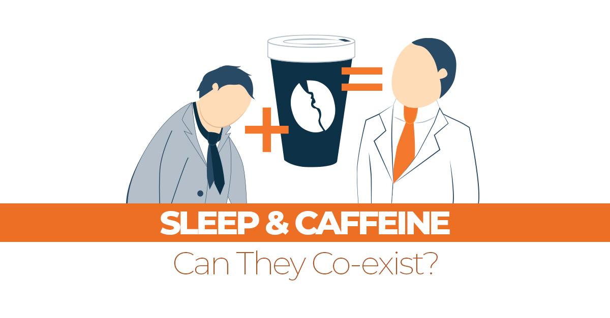

Are There Any New Developments?
The problem of neurons and other brain cells being damaged or influenced to change function is often due to the amount of screen usage and the type of content a person is exposed to. Excessive screen time at night can keep the brain in a "state of adrenaline." The release of stimulating chemicals during a time when the brain is supposed to be winding down for sleep can disrupt the circadian rhythm. This often leads to fatigue the next day at work, resulting in increased consumption of coffee and potentially fueling a caffeine addiction.
